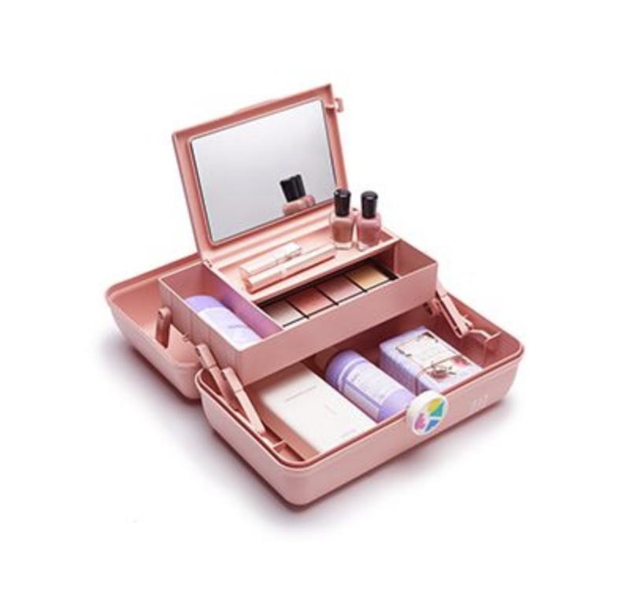
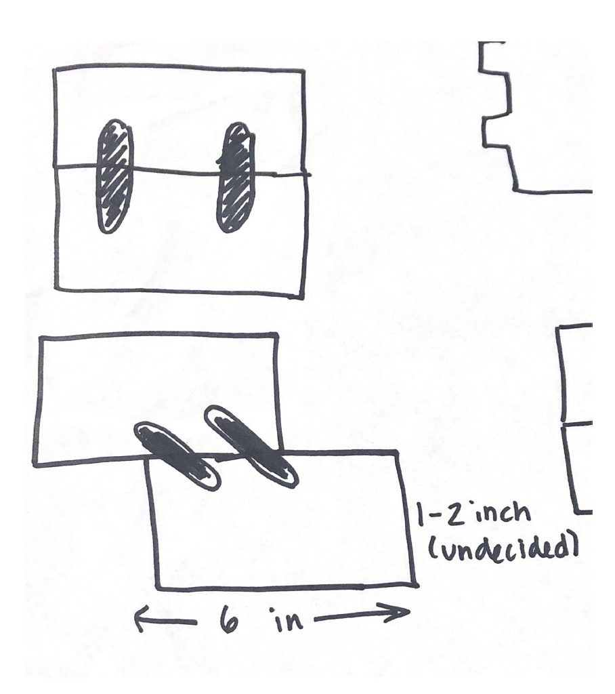
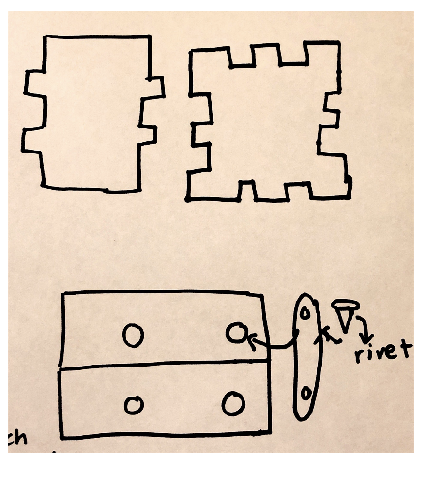
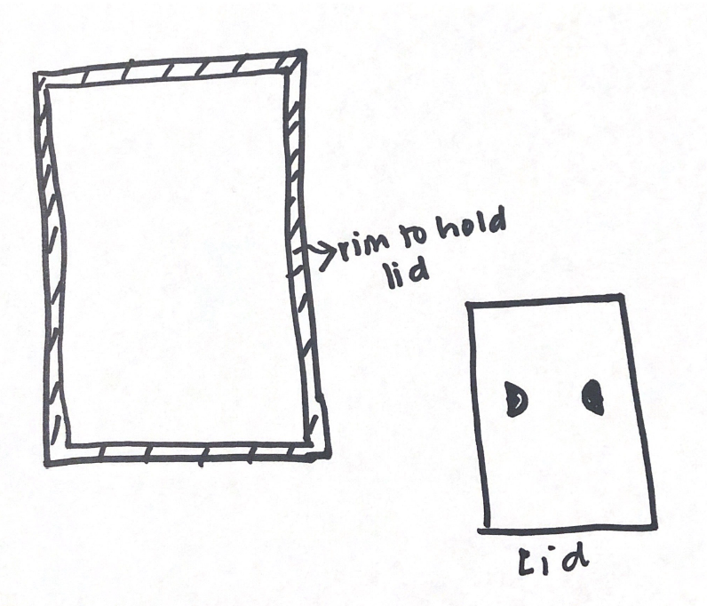

Final Project Proposal

Concept: Sheet Mask Holder
Description
I plan to make an organizational boxes that fold together. The top box would have a lid, to access
the bottom box, you would have to slide the top box back. The top box would serve as the bottom box's lid.
Use Case and Context
As a side project, I am a Korean skin care blogger and as a result, I own a lot of sheet masks.
Currently, my masks are all stored in a plastic bin but aren’t sorted in any particular order.
My PR review masks tend to get lumped in the stash and I forget what has been reviewed and what hasn’t been reviewed.
I want to use these boxes to keep newer masks and pending review masks readily available to me.
I want to use these boxes specifically for sheet masks, but it can be used to organize anything that's
small enough to fit in them (such as smaller products, tools, makeup brushes, pencils, post-its, etc.)
To create the mold's STL file, I downloaded the file into Rhino and built a box around it. The box is 2x2 inches and I scaled
the dino down to fit in the box with some room.
Inspiration:
I was inspired by Caboodles, which are used to organize makeup

Sketches:

This is a side view of how the box will look and move.

The top sketch is a really rough idea of what the pieces for the box will look like. The bottom is
what the holes, linkages and and rivets will go together

This is what I think the lid will look like, I plan to 3D print a rim for the top box that will hold the lid.
Tasks
Task 1: Create CAD pieces in Rhino
Task 2: Create assembly to test concept in OnShape
Task 3: Laser cut and press fit the two boxes
Task 4: 3D print the linkage parts and the rim of the top box
Task 5: Put together the box using rivets to connect linkages to the box
Timeline
3/31 Finish design and assembly
6/1 3D print linkages and rim, laser cut if possible
6/2 Laser cut and press fit the two boxes
Contigency Plans
If I'm not able to make a rim to hold the lid, I will mill the sides of the top mox to make an indent that
will hold the lid
If the two boxes, which I currenly invision as being the same size, are unstable or don't fit nicely together, I will
make the top box smaller